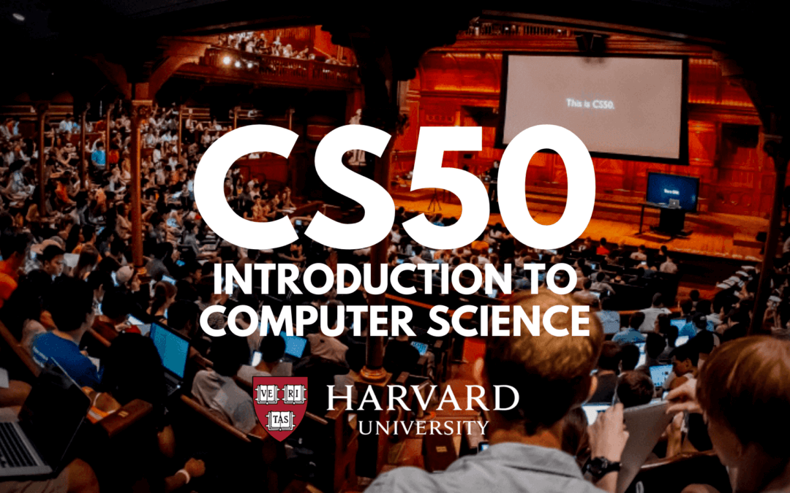

O kurzu CS50: Introduction to Computer Science

O CS50
Na tomto místě bych chtěl sepsat, co jsem se naučil v kurzu CS50 a zároveň tento kurz i ohodnotit. Hned teď můžu říct, že jsem nikdy neviděl kvalitnější, zábavnější, efektivnější online kurz. Nejvíce mě na kurzu baví přednášky, kde přednáší skvělý učitel. Jeho energie je snad nekonečná. Nezažil jsem, že by se nedala přednáška stíhat na rychlost 1.25x. Tady jsem to zažil. Tento přednášející nikdy nenudí. Podání látky je vždy velmi lehce pochopitelné. Navíc ukázky kódu jsou také velmi srozumitelné. Gró kurzu je však ve cvičeních, které studenti zpracovávají samostatně ve webovém CS50 IDE. Každé cvičení je takový malý projekt a jejich náročnost se různí. V každém týdnu je několik cvičení. Často je také možné si vybrat snadnější nebo těžší variantu problému. Já jsem ze začátku dělal těžší varianty, jelikož mám zkušenosti s programováním. Zpracovat jeden problém (tedy část týdenního cvičení) mi zabralo někdy půl hodiny a někdy jsem nad ním strávil i více dnů. Kdybych tady chtěl popisovat celý kurz nějak obecně, asi bych jen kopíroval tuto stránku s popisem kurzu.
Zde se můžete podívat na docela efektní video o kurzu
Nevím proč jsou ve videu D. Malan a ostatní v mobilech a tabletech, ale je to docela poutavé. V dalším textu se budu věnovat jednotlivým kapitolám / týdnům kurzu.
Week 0 - Scratch 😺
První týden kurzu bylo pro mě trošku opakování ale dozvěděl jsem i nové věci. Proč week 0? Prý protože „ajťáci“ počítají od nuly! Přednáška se zabývala obecnými věcmi kolem počítačových věd, jako co je to algoritmus, co je pseudocode, jak reprezentujeme informace v počítači atd. Vlastně to bylo pro mě asi nejzajímavější – jak počítač ukládá data a jak je umí číst. Myslím, že v tomto týdnu bylo nejvíce přínosné vysvětlení binární soustavy. Po shlédnutí první přednášky jsem také věděl, že toto rozhodně nuda nebude. Přednášející je opravdu super. Vše dává perfektní smysl hned na poprvé. Výklad je stručný ale zároveň obsahuje vše podstatné.
Problém 1 – Jakýkoliv program ve jazyku Scratch
Scratch bych popsal jako vizuální programovací jazyk. Do prostoru „taháte“ různé části kódu, které jdou spustit, a tak můžete vytvořit program. O Scratchi jsem slyšel už před tím, než jsem začal tento kurz. Nevěděl jsem však, že programování ve Scratchi je tak jednoduché a intuitivní! Zadání prvního problému bylo trochu vágní – naprogramovat cokoli ve Scratchi. Podmínky byly pouze takové, že „program“ musí obsahovat cyklus, podmínku, proměnnou, nějaký obrázek atd. První jsem se seznámil s prostředím Scratch, pak jsem začal „něco“ tvořit. Po prvních pokusech jsem měl představu, že udělám nějaký jednoduchý klon „space invaders“. To se mi povedlo za cca dvě hodinky. Hra nefunguje úplně bezchybně, ale protože zadání nebylo vytvořit bezchybnou hru, nechal jsem ji v docela hratelném „nevymazleném“ stavu. Největší problém byla správná implementace „kolizí“ – kdy se předměty dotýkají. TO však bylo ve Scratchi již zabudované. Jen jsem to trochu poladil. Tento projekt byl opravdu zábava. Není to nic, čím bych se chtěl chválit, ale pro zvědavce ZDE dávám odkaz na moje dílo.
Week 1 – C
Druhý týden jsem se „znova“ seznámil s programováním v C. Říkám znova, protože tady jsem hodně těžil z vysoké, kdy jsem na bakaláři studoval dvoj-obor (IT/Ekonomie) a prošel jsem předmětem „Základy programování v C“. Syntaxe mi byla tedy povědomá. Hodně jsem zavzpomínal, jak jsem se trápil u domácích úkolů. Teď už mi ty problémy, které jsem dělal jako domácí úkoly, přijdou docela triviální 😊. V druhém týdnu se jazyk C často porovnáva se Scratchem, a to hodně vyjasňuje některé principy. V přednášce o C jsem si zopakoval základy syntaxe a některé speciality v C. Také jsem těžil z mých zkušeností s JavaScriptem, protože JavaScript se hooodně inspiroval v jazyku C. Syntaxe je tedy velmi podobná. Až na ty povinné středníky v Cčku… V kurzu se hodně kladl důraz na vysvětlení té nejnižší úrovně programování – jak počítač pracuje s pamětí, jak ukládá data atd. Na krásném příkladu s žárovkami (už v týdnu 0) si ujasníme, jak je v paměti reprezentován integer. Počítač vlastně počítá jako my, jen nemá deset prstů ale jen dva. Takže jeho dvojka je naše desítka. Taky nemáme číslici deset, máme dvě číslice jedna a nula. To je deset. Počítač zase nezná číslici dva. Zná pouze číslice jedna a nula. Umí si pamatovat jen ano/ne. 0/1. True/false. Zapnutá žárovka/vypnutá žárovka.
Číslo 50 (32 + 16 + 2 = 50) na žárovkách. Vedle přednášející D.J.Malan.
V dalších pár týdnech se stále dozvídám víc a víc o tom, jak programování funguje na nejnižší úrovni. Řekl bych, že o tom taky je programování v C. Na tento týden byly tři úkoly:
- Hello world
- Mario (lehká / těžší varianta)
- Cash (lehčí úkol) / Credit (těžší úkol)
U obou úkolů jsem si vybral těžší varianty. Hello world bylo spíš pro seznámení s CS50 IDE. Mario už byl první skutečný problém, a věřím, že pro někoho, kdo nikdy neprogramoval, mohl být opravdu zapeklitý. Úkolem bylo vypsat pyramidu znaků jako například:
# # ## ## ### ###
Stačilo použít pár printf funkcí uvnitř dvojitého for cyklu. Další řešení (ale to jsem se dozvěděl až v dalším týdnu) bylo řešení pomocí rekurze. Moje řešení k nahlédnutí zde (dodat odkaz na github)
Credit už byl těžší úkol a vyžadoval přesné počítání (což je někdy „tricky“ v C). Úkolem bylo ověřit, že zadané číslo je číslo kreditní karty. Na to se používá „Luhn’s Algorithm“. Krátce řečeno z čísla kreditní karty vezmeme sudá čísla, ty vynásobíme dvěma, tento součin rozložíme na číslice, a všechny tyto číslice sečteme. Tuto sumu přičteme k součtu lichých číslic a pokud je suma těchto dvou čísel dělitelná deseti beze zbytku (končí nulou), tak se jedná o kreditní kartu. Hlavní trik byl v převodu integeru na integer menší o jednotku. Např. převést 1234 na 123. Stačilo použít modulo 10, odečíst hodnotu a vydělit číslo deseti. To vše v nějakém cyklu. Moje řešení ZDE (dodat odkaz na github). V tomto týdnu se v kurzu ještě nepoužívala pole, tak jsem je v řešení také nepoužil, i když by tak byl kód mnohem úhlednější.
Week 2 – Arrays [ ]
V přednášce jsem se dozvěděl, jak přesně funguje kompilace kódu v
jazyku C. Na rozdíl od JavaSctiptu se kód nejprve zkompiluje do
„machine code“, a pak až se spustí. V JavasScriptu (a např. i v
Pythonu) se kód spouští řádek po řádku. Takže můžete spustit
program s chybou. V C program ani nespustíte, pokud je někde chyba
(chybějící středník např.). Na to navazuje používání debuggeru,
což je poměrně jednoduchý pomocník při hledání chyb v kódu. CS50
IDE ho má zabudovaný, a často jsem ho používal abych zjistil, co
se v kódu přesně děje. Dále jsem se dozvěděl další detaily o
datových typech. Kolik má int bajtů (přesně
sizeof(int)), kolik char a jak je to se stringama či
s arrays. Až v této přednášce zjistíme, že string není nic jiného
než char *. Tzn. odkaz do paměti na první char. Konec stringu se
pozná pomocí \0, čímž je ukončený každý řetězec. Dalším tématem
jsou pole - jak se ukládají do paměti, jak s nimi pracovat a
jejich použití ve funkcích.
Tento týden byly zadané dva úkoly:
- Readability
- Caesar (jednodušší) / Substitution (těžší)
V Readability bylo za úkol určit náročnost čtení textu získaného z příkazového řádku. Náročnost textu, neboli „Reading levels“ se zjistí pomocí vzorečku: „reading level = 0.0588 * L - 0.296 * S - 15.8“ kde L je průměrný počet písmen na 100 slov a S je průměrný počet vět na 100 slov. Delší slova a delší věty mají tedy vyšší náročnost. Řešení problému spočívalo v načtení zadaného textu do array, kterou jsme procházeli a pomocí mezer a teček jsme počítali slova a písmena. Poměrně jednoduchá věc. Řešení ZDE
Ve druhé části cvičení se dalo vybrat mezi Caesar – to byla Caesarova šifra, kterou jsem už jednou vymyslel a napsal v JavaScriptu a tak jsem se rozhodl pro Substitution. Tento problém byl podobný Caesarově šifře, pouze s tím rozdílem, že jsem písmena šifroval podle předem zadaného klíče. Ten musel být 26 znaků dlouhý, aby obsahoval všechny písmena anglické abecedy. Algoritmus, který by toto řešil mě napadl hned u zadání – vytvořím si dvě pole, jedno s klíčem a druhé s abecedou, spočítám „vzdálenost“ písmen v těchto polích a potom v šifrovaném textu posunu každé písmeno o vypočtenou vzdálenost. Např. když sem šifroval A na C, tak vzdálenost je 2. Písmeno A posunu podle ASCI tabulky o hodnotu 2 a mám C. Dále jsem musel správně zvalidovat klíč, aby obsahoval neduplicitní písmena a byl na 26 znaků. Práce se stringy v C je zajímavá v tom, že musím vždy použít cyklus na každou „blbost“. Nemáme k dispozici tolik zabudovaných funkcí jako v JavaSrcriptu nebo v Pythonu (no možná máme, ale já jsem o nich nevěděl nebo nebyly k dispozici). Řešení ZDE
Week 3 - Algorithms
Zatím nejzajímavější přednáška. Tady už jsem narazil na hodně nových věcí. Hlavní koncepty přednášky:
- Vyhledávání v polích
- Big O notace a Ω ( big O je náročnost algoritmu při nejhorším case, Ω je „best case scenario“)
- Lineární x binární hledání
- Lineární hledání je vlastně procházení všech prvků pole od [0] do [n]. Při shodě jsme prvek našli.
- Binární hledání můžeme dělat jen v setříděném poli, kdy se podíváme na prostřední prvek [n/2] a porovnáme velikost hledaného prvku s prvkem [n/2]. Pak jdeme buď doprava nebo doleva opět vezmeme prostřední prvek daného úseku. Rychlost binárního hledání je lepší, ale lze ho použít pouze na setříděné množině.
- Structs (tj. něco jako objekty v JS)
- Třídící algoritmy – bubble, selection a merge sort. Plus jejich srovnání
- Rekurze a její využití v třídicích algoritmech i v jiných případech.
Na tento týden bylo ve cvičení potřeba zpracovat:
- Plurality
- Runoff (jednodušší) / Tideman (těžší
Plurality: Problém měl řešit, jak spočítat a vybrat vítěze volebního systému „vítěz bere vše“. Hlasy se zadávaly do příkazového řádku. V případě remízy vyhrávají všichni kandidáti s nejvyšším počtem hlasů. Moje řešení ZDE
V druhém problému jsem si vybral jednodušší Runoff, protože Tideman mi přišel velmi komplexní a jeho řešení vyžadovalo hodně věnovaného času. Já už jsem se nemohl dočkat lekce s Pythonem 😊. Obě cvičení opět řešily problém s výběrem vítěze voleb, tentokrát však v systému hlasování s preferenčními hlasy. Rozdíl v problémech byl v použitém volebním systému. Jeden hlasovací lístek obsahuje kandidáty seřazené od nejpreferovanějšího po nejméně preferovaného. Úkolem bylo sečíst preference, porovnat je a určit vítěze. Řešení muselo umět vyhodnocovat remízové situace a opravdu vybrat jednoho vítěze. Moje řešení ZDE
Week 4 – Memory
Pátý týden byl z 90% o pointerech, adresách a opět ukládání dat. Probíralo se jak pracovat s pointery, co to je, jak je vytvořit a používat. Novinkou byla funkce malloc, díky které můžeme dynamicky alokovat paměť. To se např. v JavaScriptu nebo Pythonu nemusí. Tam to jazyk řeší za nás. V C je to trochu složitější a často to vede k chybám nebo k delší implementaci. Daň za pohodlí JavaScriptu a Pythonu je ale jejich nižší rychlost oproti C. Dozvěděl jsem se, že pole a pointer má hodně společného. Pointer na array odkazuje na jeho první prvek v paměti, proto můžeme tak lehce přeskakovat na jiné prvky pole. Úplnou novinkou pro mě byly FILE pointers, o kterých jsem nikdy předtím neslyšel. Bylo je nutné použít v dalším cvičení.
Cvičení v této přednášce byla opět dvě:
- Filter
- Recover
Cvičení filter mě opravdu bavilo. Za úkol bylo vytvořit část programu (4 funkce), který načte JPEG a pomocí úpravy každého pixelu obrázek změní. Takže takový filtr. Implementoval jsem 4 filtry:
- Grayscale – v každém pixelu jsem vzal červenou, zelenou a modrou, tyto hodnoty jsem zprůměroval a přepsal jsem starý pixel. Protože šedá má vždy stejný poměr RBG barev.
- Sepia – podobně jako grayscale jsem pracoval s každým pixelem. Na převod do sépiových barev existuje vzoreček, který jsem použil na každý pixel.
- Reflect – tady šlo jen o to, zrcadlově otočit obrázek. Stačilo zpřeházet pixely zleva doprava a zprava doleva.
- Blur – poslední a pro mě nejzajímavější filtr. Cílem bylo fotku nebo obrázek trošku rozmazat. Pro každý pixel jsem se musel podívat na vedlejší pixely a vytvořit si jakýsi průměr tohoto malého 3x3 čtverce a tuto hodnotu dosadit do původního jednoho pixelu. Věděl jsem, že napsat několik if / else podmínek by stačilo. Přemýšlel jsem ale, jak to zobecnit a použil jsem na procházení okolních čtverců dvojitý for cyklus. A zajímavé bylo, že už pixely se procházely ve dvojitém for cyklu. Takže takový dvojitý cyklus uvnitř dalšího dvojité cyklu. Bylo opravdu nutné si řešení nakreslit, jinak bych na to asi nepřišel. Svoje řešení jsem se snažil dobře okomentovat, protože až se k němu vrátím, určitě budu lehce zmatený.
Recover – úkolem bylo „vydolovat“ ztracená data z paměťové karty. Ač se mi to zprvu zdálo poněkud neuchopitelné, po vyvsvětlení problému jsem docela dobře věděl, co mám dělat. V úkolu jsem si procvičil načítání dat ze souboru a vepisování dat do jiného souboru. Trik byl v tom, že každý JPEG začíná čtyřmi specifickými bajty – 0xFF 0xD8 0xFF a 0XE*. Cvičení mi přišlo trochu složitější, protože jsem musel implementovat hodně nových věcí. Ale nakonec jsem díky tomuto cvičení porozuměl lépe práci se soubory, což se hodilo do dalších týdnů.
Week 5 – Data structures
Přednáška se zabývala opět pointery a pamětí, tentokrát se zaměřením na pole. Na to hezky navazovalo povídání o dalších datových strukturách. Nejdůležitější bylo pochopení single linked-listu. Jde o také pole, které není v paměti na jednom místě. Každý prvek toho listu obsahuje „odkaz“ na další prvek listu, ten zase na další atd. až se dojde na konec, kde je odkaz na NULL. Pochopení principu bylo důležité pro další datové struktury – dobule linked list, tree, hash table, trie, queue, stack, dictionary. V dalším cvičení bylo nutné použít hash table a linked list. Ono vlastně hash table je takové pole linked listů. Na přednášce se povídalo o tom, na co jsou tyto struktury dobré, kdy je použít, jejich výhody a nevýhody. Např. trie bude mít vyhledávací rychlost blízko O(1), tzn konstantní rychlost vyhledávání v paměti. Zabere ale hodně paměti. Celá tato přednáška bylo o tom, jak se dají tyto struktury používat.
Problem set 5 – Speller
Úkolem bylo vytvořit program na kontrolu gramatiky v txt souboru. Program měl po spuštění načíst slovník do paměti (použil jsem hash table). Po načtení měl porovnat slova v textu se slovy ze slovníku a vyhodnoti jestli jsou gramaticky správně. Pokud ne, slovo se vypsalo. Celý proces byl „stopován“ a cílem bylo vytvořit co nejrychlejší „Speller“. Můj dosáhl docela dobrých výsledků, když jsem se dostal na rychlost přikladového řešení z CS50. V tabulce všech studentů jsem se umístil na hezkém 942. místě z cca 4300 studentů. (Hledat PauliCZ44) Nejrychlejší řešení využila nejspíš trie a mohla tak rychleji hledat v paměti. Pro mě však byla hash table dostatečně „dobrá“, a hlavně lehce pochopitelná. A taky se dala poměrně dobře implementovat. Našel jsem dobrý hashovací algoritmus, pomocí kterého jsem dokázal udělat docela velkou hash table. I tak jsem nejspíš měl „kolize“ v tabulce, a musel jsem procházet vzniklé linked listy. To mě nejspíš zpomalilo. Každopándě problém jsem splnil na 100%.
Nejsou dodělané odkazy na github, kam jsem kód ještě nedal. Nyní dokončuju week 6.
Week 6 – Ptyhon 🐍
DOKONČENO !
V tomto týdnu jsem se více seznámil s Pythonem a napsal jsem pár
prográmků na procvičení syntaxe. Python je docela hezký jazyk,
všechno prostě fungje, napíše se pseudo kód, odstraní se komenty a
je to. :) Syntaxe je podobná JavaScriptu, jen tam nejsou závorky,
na což jsem si zvykal poměrně těžko. Ale jinak je python super.
Week 7 - SQL
DOKONČENO !
Zopakování základů SQL, a napsání asi 20 SQL dotazů do databáze.
Výborné procvičení, naučil jsem so konečně pořádně psát JOIN díky
tomu že jsem pochopil jeho podstatu. Tento týden byla spíše
příprava na další týdny, kdy se v Pythonu pracuje s SQL ve
frameworku Flask.
Week 8 - WEB TRACK
DOKONČENO !
V osmém týdnu jsem si měl vybrat "track". Android / Games / iOS /
Web. Vybral jsem web. Proletěl jsem HTML, CSS a JS. Pak přišla
novinka - Flask. Zajímavá věc. Dobrá k vytvoření jednodušších webů
s dynamickým contentem. Rozšířil jsem aplikaci Finance o
nakupování (fakeovních) akcií s pomocí API a procvičil jsem
bootstrap 4. Super týden.
Závěrečný projekt
DOKONČENO ! Jako závěrečná projekt jsem si vymyslel Bang score calculator. Více v mých projektech zde
Tady se můžete podívat na můj certifikát z kurzu